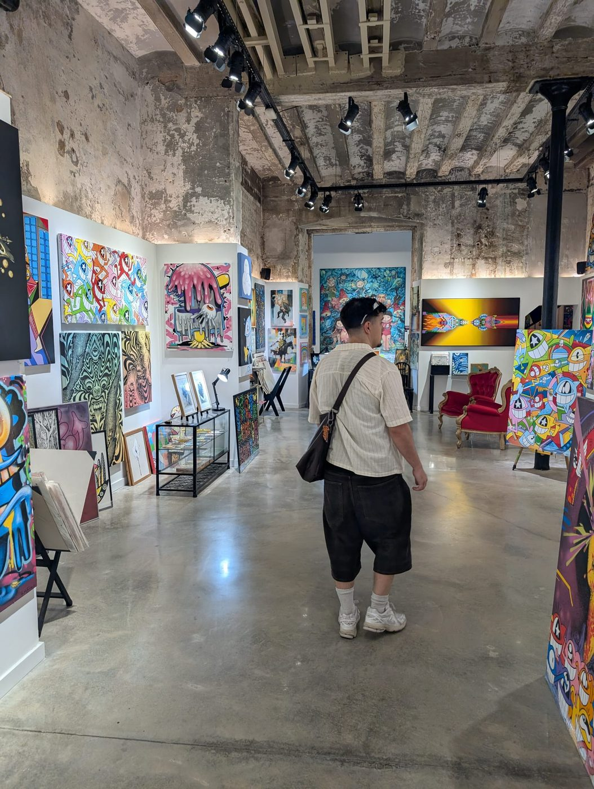
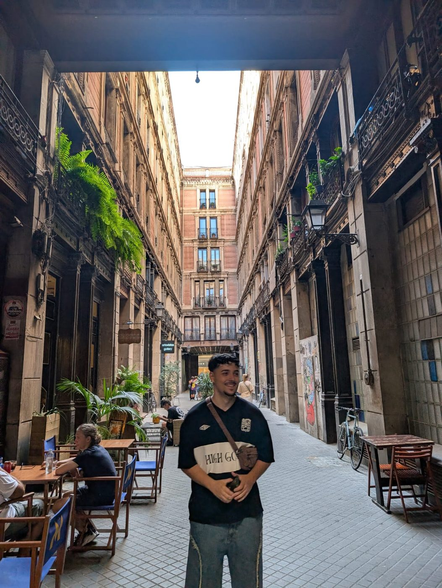

Paid media y analítica
Campañas que se miden desde el primer clic.
Marketing digital, analítica y automatización con IA.
Primero el criterio de marketing. La IA multiplica lo que ya funciona.
Combino estrategia de marketing, análisis de datos y automatización. Me gusta resolver problemas sobre la marcha y aprender lo que haga falta, sin miedo a la tecnología.
La IA y n8n son mis multiplicadores de productividad, nunca un sustituto de la estrategia.
Campañas que se miden desde el primer clic.
Flujos que trabajan mientras tú atiendes clientes.
Historias de marca con ritmo y criterio visual.
Ecosistema MarTech con landing CRO, simulador de unit economics y un flujo n8n de 23 nodos, cubierto por 111 tests.
Campaña flash B2B de textil y tazas personalizadas, con 66 tests validados antes del lanzamiento.
Oficina virtual de 35 agentes de IA en 6 departamentos con un cerebro compartido.
Pipeline automatizado de búsqueda de empleo con generador editorial de CVs.


Abierto a proyectos y a equipos de marketing que quieran ir más rápido con IA.
Escríbeme en LinkedIn